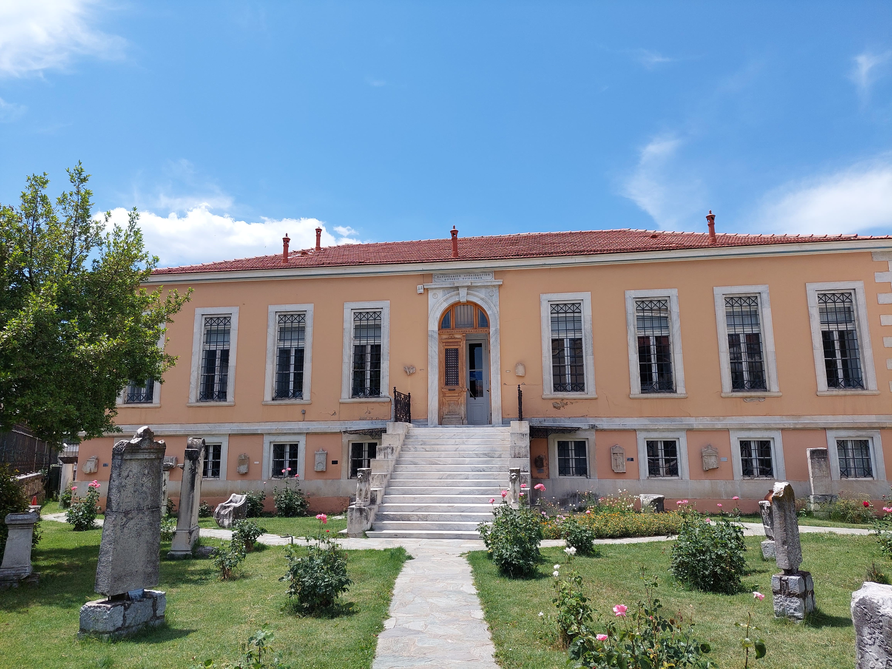

ΠΑΝΕΠΙΣΤΗΜΙΟ ΠΕΛΟΠΟΝΝΗΣΟΥ
ΣΧΟΛΗ ΟΙΚΟΝΟΜΙΑΣ, ΔΙΟΙΚΗΣΗΣ ΚΑΙ ΠΛΗΡΟΦΟΡΙΚΗΣ
Τμήμα Πληροφορικής και Τηλεπικοινωνιών
Αρχική
Πλατείες
Πλατεία Άρεως
Πλατεία Πετρινού
Πλατεία Αγίου Βασιλείου
Πλατεία Κολοκοτρώνη
Πλατεία Ανεξαρτησίας
Μουσεία
Πολεμικό Μουσείο Τρίπολης
Αρχαιολογικό Μουσείο Τρίπολης
Πάρκα
Πάρκο Δικαστικού Μεγάρου
Πάρκο Αποστολοπούλειου Πνευματικού Κέντρου
Πάρκο Φιλοδέντρων
Περισσότερα
Δικαστικό Μέγαρο
Αποστολοπούλειο Πνευματικό Κέντρο
Μαλλιαροπούλειο Δημοτικό Θέατρο Τρίπολης
Άλσος Αγίου Γεωργείου
Μουσεία Τρίπολης
Πολεμικό Μουσείο Τρίπολης

Αρχαιολογικό Μουσείο Τρίπολης